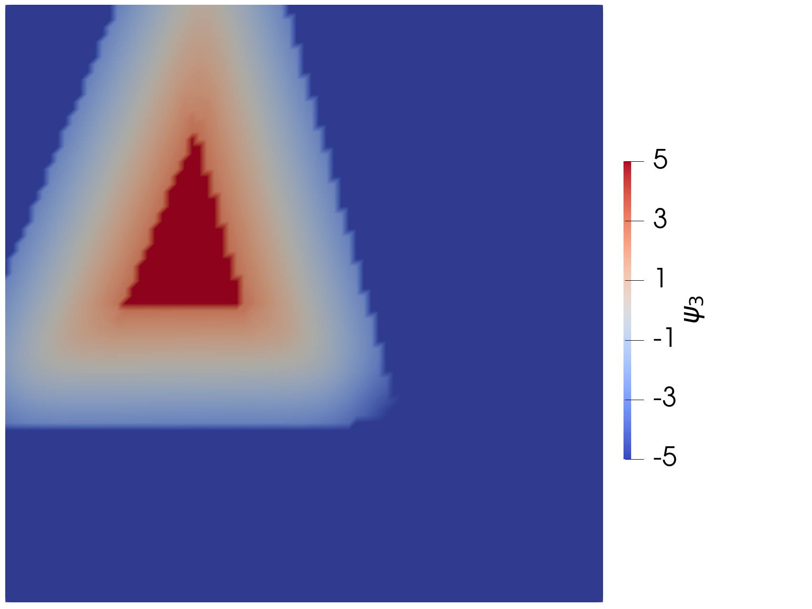
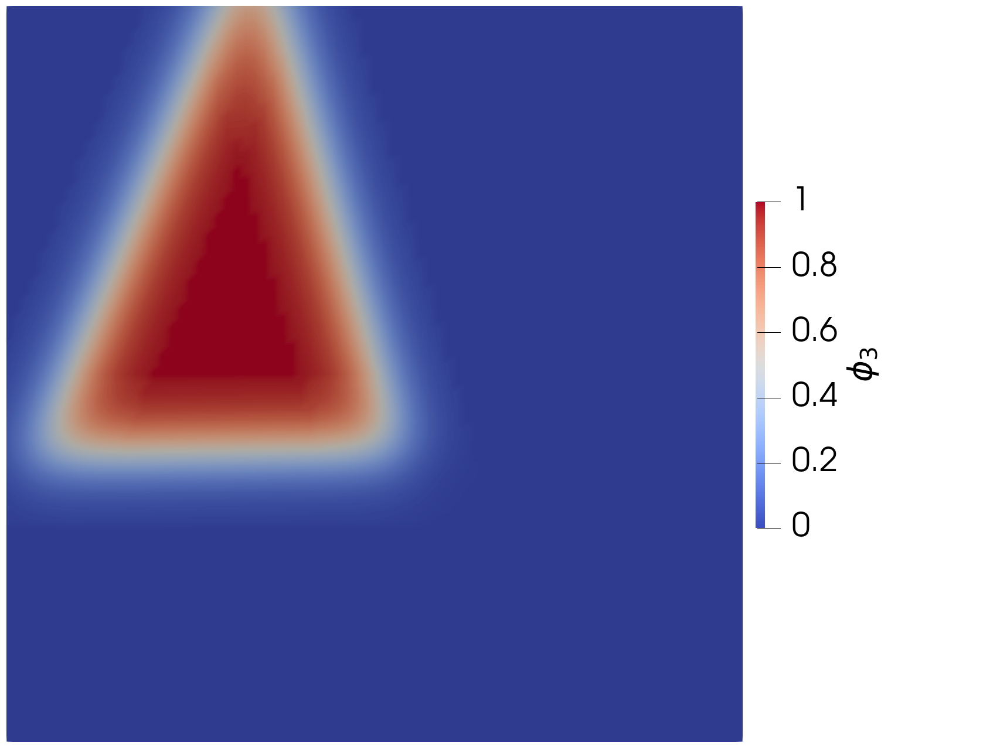

- bound_valueBound value used to keep variable between +/-bound. Must be positive.
C++ Type:Real
Unit:(no unit assumed)
Controllable:No
Description:Bound value used to keep variable between +/-bound. Must be positive.
- op_indexThe index for the current order parameter
C++ Type:unsigned int
Controllable:No
Description:The index for the current order parameter
- polycrystal_ic_uoUser object generating a point to grain number mapping
C++ Type:UserObjectName
Controllable:No
Description:User object generating a point to grain number mapping
- variableThe variable this initial condition is supposed to provide values for.
C++ Type:VariableName
Unit:(no unit assumed)
Controllable:No
Description:The variable this initial condition is supposed to provide values for.
PolycrystalColoringICLinearizedInterface
Sets up polycrystal initial conditions from user objects for transformed linearized interface
Overview

Figure 2: Initial condition for linearized interface variable from PolycrystalColoringICLinearizedInterface with bounds of

Figure 1: Initial condition for order parameter from PolycrystalColoringIC
This IC is for use with the linearized interface grain growth model. It converts the output from PolycrystalColoringIC from an order parameter for the traditional grain growth model (see Fig. 1) to the changed variable for linearized interface (see Fig. 2). It works with the various Polycrystal ICs.
For the linearized interface, it uses the function from Glasner (2001):
So, the equation for the initial condition of the transformed variables is
The initial condition also has to consider the bounds values, (defined by bound_value). When the function value of the order parameter initial condition is outside the bounds, the transformed variable value is equal to the bounds value. However, to make this evaluation, the bounds values have to be converted to order parameter values, such that:
For , .
For , .
Example Input File Syntax
We never recommend using this IC directly, but rather creating the full set of ICs for all of the transformed variables using PolycrystalColoringICAction.
Input Parameters
- blockThe list of blocks (ids or names) that this object will be applied
C++ Type:std::vector<SubdomainName>
Controllable:No
Description:The list of blocks (ids or names) that this object will be applied
- boundaryThe list of boundaries (ids or names) from the mesh where this object applies
C++ Type:std::vector<BoundaryName>
Controllable:No
Description:The list of boundaries (ids or names) from the mesh where this object applies
- stateCURRENTThis parameter is used to set old state solutions at the start of simulation. If specifying multiple states at the start of simulation, use one IC object for each state being specified. The states are CURRENT=0 OLD=1 OLDER=2. States older than 2 are not currently supported. When the user only specifies current state, the solution is copied to the old and older states, as expected. This functionality is mainly used for dynamic simulations with explicit time integration schemes, where old solution states are used in the velocity and acceleration approximations.
Default:CURRENT
C++ Type:MooseEnum
Controllable:No
Description:This parameter is used to set old state solutions at the start of simulation. If specifying multiple states at the start of simulation, use one IC object for each state being specified. The states are CURRENT=0 OLD=1 OLDER=2. States older than 2 are not currently supported. When the user only specifies current state, the solution is copied to the old and older states, as expected. This functionality is mainly used for dynamic simulations with explicit time integration schemes, where old solution states are used in the velocity and acceleration approximations.
Optional Parameters
- control_tagsAdds user-defined labels for accessing object parameters via control logic.
C++ Type:std::vector<std::string>
Controllable:No
Description:Adds user-defined labels for accessing object parameters via control logic.
- enableTrueSet the enabled status of the MooseObject.
Default:True
C++ Type:bool
Controllable:No
Description:Set the enabled status of the MooseObject.
- ignore_uo_dependencyFalseWhen set to true, a UserObject retrieved by this IC will not be executed before the this IC
Default:False
C++ Type:bool
Controllable:No
Description:When set to true, a UserObject retrieved by this IC will not be executed before the this IC
Advanced Parameters
- prop_getter_suffixAn optional suffix parameter that can be appended to any attempt to retrieve/get material properties. The suffix will be prepended with a '_' character.
C++ Type:MaterialPropertyName
Unit:(no unit assumed)
Controllable:No
Description:An optional suffix parameter that can be appended to any attempt to retrieve/get material properties. The suffix will be prepended with a '_' character.
- use_interpolated_stateFalseFor the old and older state use projected material properties interpolated at the quadrature points. To set up projection use the ProjectedStatefulMaterialStorageAction.
Default:False
C++ Type:bool
Controllable:No
Description:For the old and older state use projected material properties interpolated at the quadrature points. To set up projection use the ProjectedStatefulMaterialStorageAction.
Material Property Retrieval Parameters
References
- Karl Glasner.
Nonlinear preconditioning for diffuse interfaces.
Journal of Computational Physics, 174(2):695–711, 2001.[Export]